Chapter 15 Class 13: 10 11 2020 Maximum likelihood and all that
We have been fitting regression models, using say function lm. While this might seem rather ordinary and uninteresting to a seasoned statistician, it is quite remarkable for the average person. So remarkable that I would suggest the analogy of a cell phone to most of us. We do not really think about it, since we do it all the time, but wait a second: can you imagine all the things that must happen inside that little device so that your cousin Maria João having her honey moon in Hawaii can share with you a 2-second delay live of the fantastic romantic dinner she is having, while you are actually 10000 meters above ground on a plane preparing to land in Siberia? I dare to say that for about 99.9 % of the readers, you cannot imagine it! And I do not plan on telling you here all the technological hurdles that had to ve overcome to make it possible - and I hope by now you have realized that is beyond the purpose of this book. On the contrary, telling you what happens behind the scenes when a function like lm reports some maximum likelihood estimates of a given model parameters is the task that lays ahead. “Brace brace!”, as they might say when facing strong turbulence on your plane that, remember, is currently landing in Siberia.
What lm does under the hood is, conditional on a given parametric form to describe reality, a model, estimate the best value of the model parameters, given the data. We illustrate it here using the standard linear model, with a single covariate \(x\) to explain the response \(y\). We have encountered the model a few times before, the model itself is just the equation of a line, that we assume might be a good descriptor of how a response variable Y depends on a predictor X. Given some observations of X and Y, we can relate the response as a function of the predictor, and because no model is perfect, there are diferences between the observed values for the response and what we would predict them to be based on the model alone
\[y_i=\alpha+\beta x_i+e_i\]
where \(e_i \sim Gau(0,\sigma^2)\). Given some data, the lm function can help us find the best values of \(\alpha\), \(\beta\) and \(\sigma\). Those we call estimators, and denote them by \(\hat \alpha\), \(\hat \beta\) and \(\hat \sigma\). After collecting a sample, we fit the model and we get the estimates. Remember estimates are observed values, or realizations based on the sample, of estimators.
The way lm finds the estimates is via maximum likelihood. Actually, this happens despite the fact that the line is widely know as the minimum squares line. Why is it called that? Because as we saw in chapter ?, that line is the line that minimizes the sum of the squares of the deviations between the observations and the predictions conditional on the best line. Formally, that is the line that minimizes the following quantity
\[\sum_{i=1}^n (y_i-\hat y_i)^2=\sum_{i=1}^n (y_i-(\hat \alpha+ \hat \beta x_i))^2.\]
In the simple case of a line, the minimum square parameter estimates and the maximum likelihood parameters estimates are the same. But what is the likelihood and how does it work? We will introduce the concept using an example. Imagine a biologist, lets call her Andreia. Andreia is interested in estimating the probability that a pair of jays will produce eggs before the first of June.
She sets out to find a random sample of blue jay nests, and defines a random variable \(X\) representing the egg status of a nest on the 1\(^{st}\) of June. We assume that all eggs laid before 1 June will not have fledged yet, so she observes the variable of interest without error. Andreia decides that \(X\) will take:
- the value 1 if eggs are present, which she will call a success, and she assumes that happens with probability \(\theta\),
- the value 0, which she calls a failure, representing no eggs present, with probability 1-\(\theta\).
Assuming that the probability of different nests having eggs is independent, each of these is a Bernoulli trial, and there are \(N\) trials, of which we could say \(n\) will be successes, and \(N-n\) will be failures. The Bernoulli is a special case of a Binomial random variable, with a single trial and probability of success \(\theta\). In fact, when you consider all the nests together that is indeed a Binomial with parameters \(N\) and \(p\). This is true provided indepedence across nests and that the probability of success is constant, which might not be a reasonable assumption, but we will keep that complication aside until later. A small detour to justify this statement: there is a theoretical result that demonstrates that the sum of \(K\) independent Binomials \(X_k\), each with \(N_k\) trials, with constant probability of success \(p\), is a Binomial(\(N,p\)), where \(N=\sum_{k=1}^K N_k\). Therefore, the sum of \(k\) Bernoulli trials, i.e. \(k\) Binomial(1,p) independent random variables, is also a Binomial(\(K,p\)).
So this is a model with a single parameter, \(\theta\). (since we know \(N\), the number of trials!)
Andreia goes out and about in the field and finds 5 nests. The first has eggs, the second hasnone, and third as eggs again, and the forth and fifth do not. By this time Andreia is tired and decides to call it a day, with her sample \(x\) collected: \(x=c(1,0,1,0,0)\).
Note that in this case the number of successes n is 2 and the number of failures N-n is 3.
Then she asks a friend doing an MSc in biostatistics how she can estimate the value of \(\theta\). Unfortunately, her friend has just started her classes, and she too is a bit unsure about what to do too. But she does know how to calculate the probability of the observed sample.
\[P(x|\theta)=\theta (1-\theta) \theta (1-\theta) (1-\theta)=\theta^2 (1-\theta)^3\]
If only we knew what the value of \(\theta\) was we could evaluate this probability. Imagine that it was 0.2, then the probability of the sample would be \(0.2^2 0.8^3\)=0.02048. What if it was 0.8, then the probability of the data would be \(0.8^2 0.2^3\)=0.00512. This is a considerably lower probability.
And here’s when Andreia’s friend has a great idea. What if we turn it around and look at this as a function of theta, conditional on the data
\[P(\theta|x)=\theta (1-\theta) \theta (1-\theta) (1-\theta)=\theta^2 (1-\theta)^3\]
Then we could evaluate the expression for a set of possible values for \(\theta\), and the largest probability will intuitively correspond to the most likely value of \(\theta\).
library(knitr)
thetas<-seq(0.05,0.95,by=0.1)
pthetas<-thetas^2*(1-thetas)^3
kable(cbind(thetas,pthetas),col.names = c("theta","P(theta)"))| theta | P(theta) |
|---|---|
| 0.05 | 0.0021434 |
| 0.15 | 0.0138178 |
| 0.25 | 0.0263672 |
| 0.35 | 0.0336416 |
| 0.45 | 0.0336909 |
| 0.55 | 0.0275653 |
| 0.65 | 0.0181147 |
| 0.75 | 0.0087891 |
| 0.85 | 0.0024384 |
| 0.95 | 0.0001128 |
The largest values are observed for the trial values of \(\theta\) of 0.35 and 0.45. What if we calculate that probability for an even finer grid of values possible for \(\theta\) and represent it in a plot. This is what follows, and we add to the plot a dashed vertical line representing the value of \(\theta\) for which that function is maximized.
thetas <- seq(0.01,0.99,by=0.01)
pthetas<-thetas^2*(1-thetas)^3
plot(thetas,pthetas,ylab="P(\theta|x)",xlab="theta")
abline(v=thetas[pthetas==max(pthetas)],lty=2)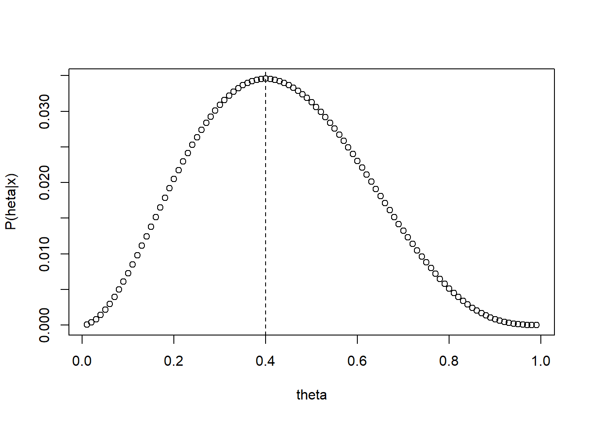
You will probably not be too surprised to find out that \(\hat \theta\)=0.4 is indeed the maximum likelihood estimate (MLE). This should not have come as a surprise. Remember we had 2 successes in 5 trials, and that corresponds to an empirical proportion of success of 0.4. In fact, for a binomial proportion we can show analytically that the maximum likelihood estimator (err… also MLE) of \(\theta\) corresponds to the the number of successes divided by the number of trials. Note that in general it will be from the context that one can say if MLE stands for an estimate, which corresponds to a random realization of the estimator, or for the estimator itself.
Andreia asks her friend what was the point of the exercise then. If the MLE was just the empirical proportion, 2/5=0.4, why going through all this trouble? There are at least 3 good reasons for that:
- This way we understand why an MLE is
- If you look at the figure above, we not only have an estimate of the parameter \(\theta\), but we also have an idea about the precision around that estimate. That comes from the shape of the likelihood profile. We get back to this below.
- by embedding it in the concept of a likelihood, we open the door to generalize this procedure to any other, potentially far more complicated, situation for which closed form analytic estimators do not exist. As examples of additional sophistication, we could easily:
- consider several parameters at once; as an example, we could be considering instead of a Bernoulli a complex model that describes how a whale dives, with 17 parameters that we want to maximize at once. Rarely closed form estimators will be available then;
- make the parameters a function of observed covariates. In the case of our nests, the height of the nest could be a relevant covariate to model the probability of success of a nest, say. In such a case, we could have an estimate for \(\theta\) that would be dependent of the height
h, e.g by defining that \(\theta_h=f(h)\). Naturally we would choose the link function f such that \(\theta\) would be constrained to be between 0 and 1, the possible values for a probability. The logit link function comes to mind here. But that will be a story for later.
To illustrate the point above regarding being able to estimate the precision around the parameter estimate from the likelihood function, lets consider that we had not 5 samples, but many more. In the figure below we contrast the small sample size to a set of increasing sample sizes: 50, 100 or 1000.
par(mfrow=c(4,1),mar=c(4,4,0.5,0.5))
thetas <- seq(0.01,0.99,by=0.005)
pthetas<-thetas^2*(1-thetas)^3
plot(thetas,pthetas,ylab="P(\theta|x)",xlab="theta (n=5)",type="l")
abline(v=thetas[pthetas==max(pthetas)],lty=2)
# sample size 50
pthetas<-thetas^20*(1-thetas)^30
plot(thetas,pthetas,ylab="P(\theta|x)",xlab="theta (n=50)",type="l")
abline(v=thetas[pthetas==max(pthetas)],lty=2)
# sample size 100
pthetas<-thetas^40*(1-thetas)^60
plot(thetas,pthetas,ylab="P(\theta|x)",xlab="theta (n=100)",type="l")
abline(v=thetas[pthetas==max(pthetas)],lty=2)
# sample size 1000
pthetas<-thetas^400*(1-thetas)^600
plot(thetas,pthetas,ylab="P(\theta|x)",xlab="theta (n=1000)",type="l")
abline(v=thetas[pthetas==max(pthetas)],lty=2)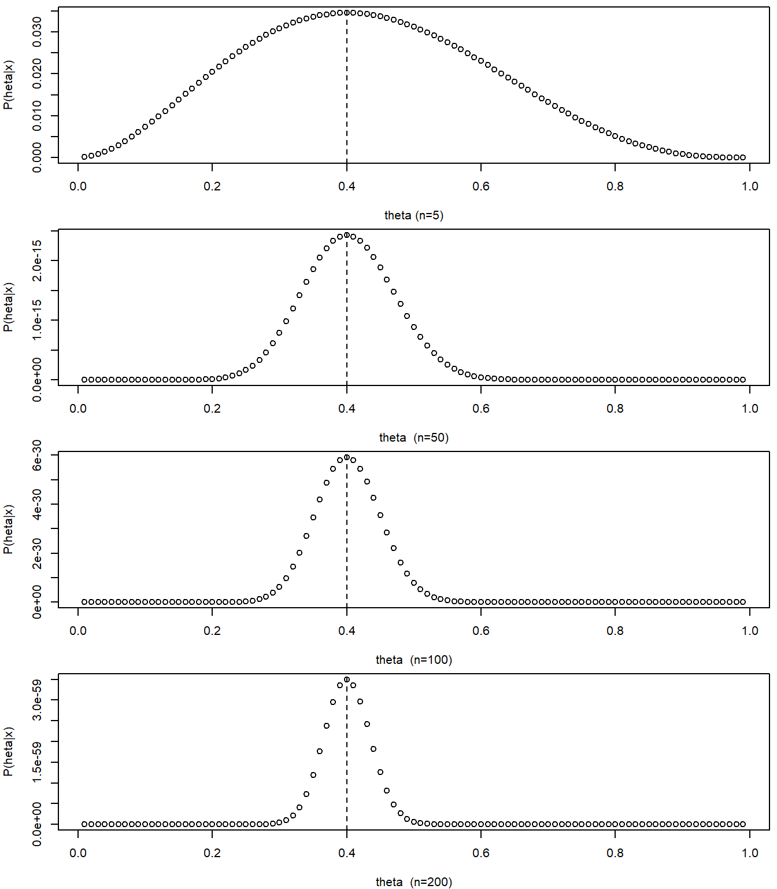
As we increase the sample size, and hence we increase the amount of information available to estimate \(\theta\), the likelihood profile becomes more spiky. It can be demonstrated that the curvature of the likelihood profile allows us to quantify the precision on our estimate of the parameter. Naturally, the steeper the curve, the better, in the sense that the more certain we are. On the other hand, when the likelihood surface is very flat, we might hit problems in terms of the numerical maximization of the likelihood.
15.1 Maximizing a likelihood algebraically
Above we were able to maximize the likelihood function via a “grid” search. We divided the possible range of values that the parameter could take, also know as the parameter space, into a large number of candidate values. Then we evaluated the likelihood at each one of these, and picked the value of the parameter for which the function was maximum: the maximum likelihood estimate.
Grid search can become very inefficient very fast, and hence there are other ways to maximize a likelihood. One is to analytically find what is the maximum of that function. How can we do that? Straightforwardly for our example. You differentiate the function, find the point at which the first derivative is 0, and by definition that point is a maximum or a minimum. If you are unsure the second derivative would tell you which. Considering the above
\[\frac{d(f(\theta))}{d \theta}=\frac{d(\theta^n (1-\theta)^{N-n})}{d \theta}\]
Then by solving
\[\frac{d(f(\theta))}{d \theta}=0\]
we get that \(\hat \theta = n/N\), which is just the empirical proportion (i.e. the observed proportion of successes in the sample).
(note to self: add detail to these derivations above, AND MAKE IT CORRECT - CORRENTLY WE IGNORE THE binomial CONSTANT IN THE LIKELIHOOD, WHICH IS strictly WRONG!)
However, like the grid search, this is not a problem free procedure. The above expression was simple enough that derivation was trivial. That will not be the rule, but the exception, so we need an alternative approach for when models are more complex than our Bernoulli example. That will be the norm in real ecological models.
15.2 Numerically Maximizing a likelihood
Here we look at using a numerical maximization procedure, which means that we will derive a procedure, an algorithm, that will find the maximum of a function computationally. The analogy with the real world is simple. Imagine that you were somewhere in the most boring country in the world, Boredomnesia. It happens to be a square with a single mountain at the center, as depicted in the image below, and you wanted to start walking and reaching the highest point in the country. Boredomnesia happens to also be the foggiest country in the world, so you manage to see about 3 meters around you, at most!
# need mvtnorm package
library("mvtnorm")
range = seq(-5,5,0.1)
mean = c(0,0)
Sigma = matrix(c(1, .5, .5, 1), 2)
out = matrix (rep(0,101*101),101)
for (i in 1:length(range)){
for (j in 1:length(range)){
out[i,j] = dmvnorm(c(range[i],range[j]),mean=mean,sigma=Sigma)
}
}
persp(out,theta = 30,phi = 20,col="lightblue",xlab = "Latitude",ylab="Longitude",zlab="Elevation")Figure 15.1: Ilustrating a likelihood. This would be Boredomnesia, the most boring country in the world. You want to to find a way to reach its highest point amidst the dense fog that characterizes it. How can you do it? Just keep moving up!
But you actually have no idea about the orography of the country, and you can only see so much as the country is always a bit foggy. To make sure you manage, you could set up a set of rules for yourself:
- starting where you are (this seems like a lame first step, but you will see surprisingly that is actually one of the hardest things to do for a computer!). Then, until you cannot find a higher point, repeat the following steps:
- evaluate the height where you are currently
- evaluate the height at 8 directions around you (like North, South, East, West and the 4 intermediate directions, say), say at 1 m from you
- move toward the steepest highest of those directions
- the step length you move should be proportional to the expected change in height as you move
- stop when you are not really changing much your altitude anymore each time you move
If you do these steps above, when you stop you are for sure close to the top. Well done, you made it, you are the king of the world (well, at least, Boromdesia)! Note that how close you are to the highest point, i.e. the real top, just depends on your specific stopping rule and how much you were moving at each step.
Naturally, this assumes the terrain of the country you are in is relatively simple. More precisely, that there is only one mountain in the country, and there are no valleys (or in a likelihood world, no local maxima). Basically, you would not like to be Dane, or Dutch, as there are no mountains there to begin with, and definitely you would not want to be near the Grand Canyon (Figure X), or even in Scotland (Figure X), where the Munro’s would certainly defeat you. As we will see below, this has very important implications in the likelihood world!
Now… what happens inside a computer? The above example makes more sense if we are maximizing a likelihood with respect to two parameters, so that the likelihood surface is a bi-dimensional surface. Imagine a Gaussian, for which we want to estimate the mean \(\mu\) and the standard deviation \(\sigma\). In the real world the analogy is latitude is equivalent to \(\mu\), longitude is equivalent to \(\sigma\), and the altitude is the likelihood. So now we look at how a computer does it.
There are many algorithms one could use, and here we will use some standard R functions to do the job for us. We will consider a couple, optimize, when we are only considering a single parameter, and optim, for when more than one parameter is at stake. An alternative to optim might be nlm (from package stats). There are many other options in and outside R.
The first thing we need to do is to write up the likelihood function. This will often be the hardest part. That would be like having a detailed map of the country such that we can evaluate altitude at any given set of cooredinates. We know that takes a lot of work to do.
To use optim/optimize, the likelihood function must be a function which the first argument is the parameter(s), typically the second is the data. Then other additional parameters might follow, or not. Let us build, step by step, a likelihood for the example of the Bernoulli case for the nests we were looking at in the previous section.
Recall the probability of \(\theta\), given the data 1,0,1,0,0.
\[P(\theta|x)=\theta (1-\theta) (1-\theta) \theta (1-\theta)=\theta^2 (1-\theta)^3\] Recall also that this is not the probability of a sample having two successes and three failures, since different permutations of the observations might be possible, but that the number of samples generating that same outcome is not really relevant for the likelihood, since it does not provide information about \(\theta\).
We can write a bespoke function of \(\theta\) to evaluate this probability
Now we use it, job done
## [1] 0.03364156just as in the table above, we are good. But this is not really what we want, because the data, our sample was hardwired, we need a function that could cope with any sample. We need to be able to compute the relevant statistics from the sample. Andreia realizes that she can do that easily by summing successes and failures in the table
## [1] 2## [1] 3and hence she suggests this new formulation
liktheta2=function(theta,dados){
# This function calculates (a value proportional to) the likelihood for
# a sample given the value for the parameter theta
# Input:
# theta: parameter value
# dados: the observations (assume um vector de 0's e 1's)
# Output:
# lik: a value, the likelihood for theta
# get number of successes
n1<-sum(dados==1)
# get number of faillures
n0<-sum(dados==0)
# get likilihood
lik=(theta)^n1*(1-theta)^n0
# produce the output
return(lik)
}that she tries out
## [1] 0.03364156and she gets the same value as above. She is happy, as she can now calculate the likelihood for (1) any parameter value and (2) any sample. Excited, she shows how this would be the case for 11 nests, with just 1 success, assuming a \(\theta\) of 0.35
## [1] 0.00471196All seems to work. Now, she is really excited and she has a dream where she samples 500 eggs, and 1500 successes. She wakes up and wants to know the likelihood of \(\theta=0.35\) under that scenario
## [1] 0Ups, something went terribly wrong, the likelihood is now… 0. This is unhelpful, one cannot climb a mountain if… there is no mountain! She scratches her head for a while and she realizes what is going on. She is multiplying 10000 probabilities. Even if those were high probabilities, the number becomes smaller and smaller each time a new probability is multiplied by the current product, and the computer will eventually round them to 0.
Andreia calls another good friend, and he says that he will give her some clues about logs that might help. And then he says:
If you apply the log to a function, the logged function will have the same maximum as the untransformed function, and
\(log(a \times b) = log(a)+log(b)\), and
\(log(a^b) = b~log (a)\)
Andreia hangs up the phone and takes a mental note: “I need to find better, more useful, friends”! But during the night she has an epiphany. If she logs the function, a product of probabilities, she will get a sum of log probabilities. Log probabilities are smaller than probabilities, but there is a small miracle in the process. The sum of small numbers does not tend (i.e., does not converge to) 0! And so she tries a new function, where she adds the log probabilities
logliktheta=function(theta,data){
# This function calculates (a value proportional to) the likelihood for
# a sample given the value for the parameter theta
# Input:
# theta: parameter value
# dados: the observations (assume um vector de 0's e 1's)
# Output:
# lik: a value, the likelihood for theta
# get number of successes
n1<-sum(data==1)
# get number of faillures
n0<-sum(data==0)
# get log likelihood note log(a^b) = b log (a)
loglik=sum(n1*log(theta)+n0*log(1-theta))
# produce the output
return(loglik)
}She calculates the function that gave her grief above, and the egg dream meets the epiphany
## [1] -1171.085Then, she just needs to call the optimize, where interval defines the plausible parameter space, and we make sure that maximum is TRUE because by default the function optimize minimizes (That is why we sometimes use a function that is -log(likelihood), that means the minimum is the point we want!) the function f with respect to its first parameter, given any other arguments provided to f. In this case those other parameters are just the data, the second argument for liktheta. Those you will recognize as our data.
## $maximum
## [1] 0.399996
##
## $objective
## [1] -3.365058Now we can actually calculate the MLE for \(\theta\) in the case of Andreia’s dream sample.
MLEthetadream<-optimize(f=logliktheta,interval=c(0.01,0.99),data=dreameggs,maximum=TRUE)
MLEthetadream## $maximum
## [1] 0.2500124
##
## $objective
## [1] -1124.67So the output of optimize has two components, \(maximum\) and \(objective\). What are these?
The two components of this object are the MLE of the parameter, in this case 0.399996 and the value of the function at that point for \(\theta\), in this case -3.3650583. This will be the actual value of the likelihood at this point and might be useful later, but for now we ignore it. Note that 0.399996 is just a numeric approximation of the real value, that we know analytically to be 0.4. The value of the log-likelihood function and the value of \(\theta\) for which it is maximized are illustrated below:
#valores possiveis para thetas
thetas<-seq(0.01,0.99,by=0.01)
#object to hold the values of the likelihood
nthetas <- length(thetas)
loglikthetas<-numeric(nthetas)
#para cada theta
for(i in 1:nthetas){
loglikthetas[i] <- logliktheta(thetas[i],nests)
}
plot(x=thetas,y=loglikthetas,ylab="Log likelihood",xlab="theta")
abline(v=MLEtheta$maximum,h=MLEtheta$objective,col="green")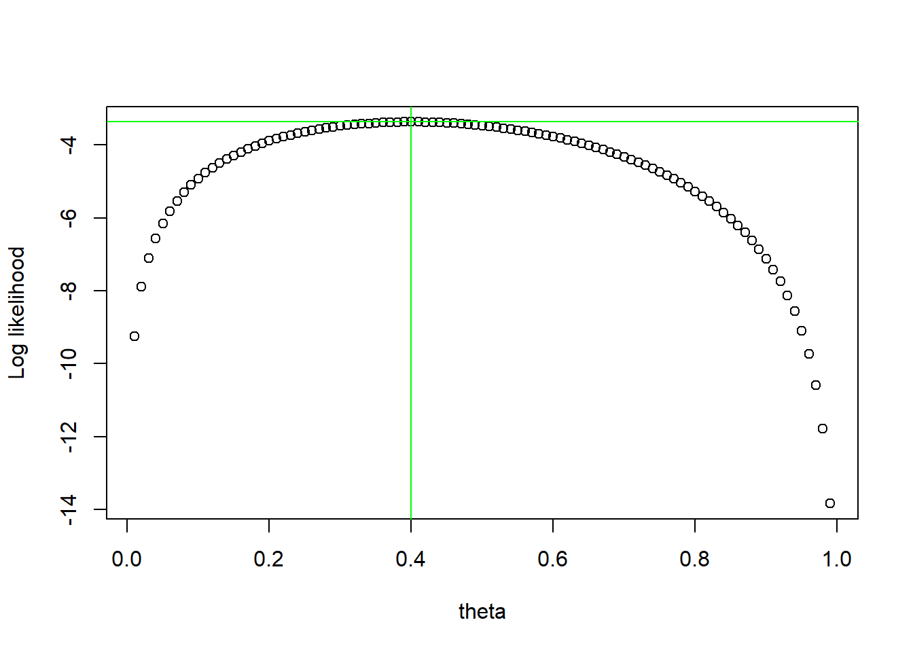
Note that if one considered the minus log-likelihood function, we would want to minimize rather than maximizing the corresponding function. The visual illustration of how maximizing the likelihood, the log-likelihood or minus the log-likelihood should be obvious from the following image where the 3 functions are shown for our original example of 5 nests.
par(mfrow=c(3,1),mar=c(4,4,0.1,0.1))
#valores possiveis para thetas
thetas<-seq(0.01,0.99,by=0.01)
#object to hold the values of the likelihood
nthetas <- length(thetas)
likthetas<-numeric(nthetas)
#para cada theta
for(i in 1:nthetas){
likthetas[i] <- liktheta2(thetas[i],nests)
}
plot(x=thetas,y=likthetas,ylab="Likelihood",xlab="theta")
abline(v=MLEtheta$maximum,h=MLEtheta$objective,col="green")
plot(x=thetas,y=loglikthetas,ylab="Log likelihood",xlab="theta")
abline(v=MLEtheta$maximum,h=MLEtheta$objective,col="green")
plot(x=thetas,y=-loglikthetas,ylab="- Log likelihood",xlab="theta")
abline(v=MLEtheta$maximum,h=MLEtheta$objective,col="green")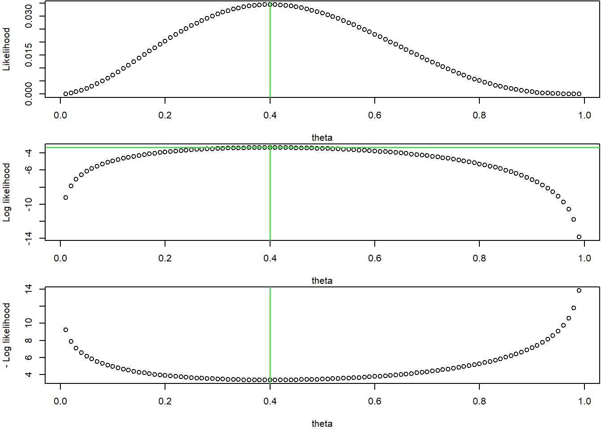
As a task, what would it require to change the above code to calculate the value of theta if we had 78 trials and 43 sucesses? You got it, just need to change the data
MLEtheta<-optimize(f=logliktheta,interval=c(0.01,0.99),data=c(rep(1,43),rep(0,78-43)),maximum=TRUE)
MLEtheta## $maximum
## [1] 0.5512824
##
## $objective
## [1] -53.6545So, now we know all about likelihoods, but Andreia wonders. Why all the trouble, if she could just have calculated the exact value of the MLE as the observed empirical proportion? To reach a situation where an analytic expressions is not available, showuing us the full potential of maximizing numerically a likelihood, we need to continue with Andreia’s explorations.
15.3 The case of a Gaussian
Lets now look at situation where Andreia is interested in characterizing how far away from the nearest river, in a straight line, are the nests from water. She assumes that these might be hypothetically described by a Gaussian random variable. That will be the basis for constructing a likelihood. For her 5 nests, those distances in kilometers are
Then she thinks about what might the likelihood look like for a Gaussian. She knows R can evaluate the probability density function of a Gaussian via dnorm, and so she suggests the following minus log likelihood function:
minuslogliknorm=function(pars,data){
media=pars[1]
desvio=pars[2]
minusloglik=-sum(log(dnorm(data,mean=media,sd=desvio)))
return(minusloglik)
}She tests the function on simulated data, 10000 fake distances with mean 2 and standard deviation 2.7. Note since the function involves two parameters, she can no longer use optimize. The function optim comes in handy. A key difference between optimize and optim is while in the former you must define the range of values the function can search over, in the latter you need instead to define the starting values for each parameters the function to be evaluated at.
So she does it and, either a small miracle happened, or she got it right at first try:
#simulated sample size
n<-10000
# simulated mean
mG<-2
# simulated standard deviation
sdG<-0.7
# simulated sample
xs=rnorm(n,mean=mG,sd=sdG)
# MLE of the parameters
MLEGau<-optim(par=c(1,1),fn=minuslogliknorm,data=xs)
MLEGau## $par
## [1] 1.9994644 0.6987295
##
## $value
## [1] 10604.8
##
## $counts
## function gradient
## 65 NA
##
## $convergence
## [1] 0
##
## $message
## NULLNote she now has more than 1 parameter, so optimize was not an option, and had to use function optim. This requires starting values via argument par, but the rest is similar to optimize, the data and the function to maximize is fn. The output is a bit messier, but we note that the object returned by optim has the following components
par- the parameter estimatesvalue- the value of the function at the parameter estimatescounts- the number of times the function was evaluatedconvergence- if 0, the procedure converged. If not zero, look into?optimso that you can see the detailsmessage- if the convergence code is not 0, the message might help you uinderstand what went worng
As a task, try starting the function in a different part of the parameter space, to see the impact on the parameter estimates. In general, the parameter estimates should be insensitive to where the function starts, with minor changes being expected, since it is a numerical procedure, but these small changes should be negligible at the scale that the parameters might be relevant. This is the case for well behaved likelihoods, but in patholocicla cases, that might not be the case. Therefore, a key aspect when maximizing likelihoods numerically, is to make sure the results do not depend on the starting values.
If we evaluate the above likelihood using a brute force grid approach, this is what we get
# to implement later
# students: you are challenged to do this for me :)
# note the expand.grid function might com in handyNotice how the above image reminds us of Boredomnesia! Now, we know how to do this for more than one parameter, but why would we? After all, if I wanted to estimate the MLE of a Gaussian, actually, these are also algebraically available, since these correspond to the sample mean mean(xs)=1.999534 and the sample standard deviation sd(xs)=0.6987875, respectively. So the above values obtained by optim for \(\mu\) and \(\sigma\), the MLEs, 1.9994644 and 0.6987295 respectively, are really just numerical approximations of the real analytically obtainable MLE’s 1.999534 and 0.6987875, respectively (note: need, strictly, to refer to minor detail regarding denominator of the standard deviation, considering n, the MLE, or n-1, not MLE but unbiased; ME students can ignore detail for now!). These are themselves, in this case where we know reality, estimates of the true simulated values generating our data, 2 and 0.7, respectively. So all quite reasonable and close to the know truth, really, what is not surprising given the large sample size.
Now, what about based on the distances Andreia had for the 5 nests
## [1] 0.78 1.73 0.54 1.32 2.12## $par
## [1] 1.2979771 0.5840272
##
## $value
## [1] 4.406008
##
## $counts
## function gradient
## 53 NA
##
## $convergence
## [1] 0
##
## $message
## NULLNote that, as it might be interesting for later, that nests with eggs were closer to the water. But remember also that with such a small sample size, believing in that as being some indication of reality, rather than just a fluke, is a matter of faith.
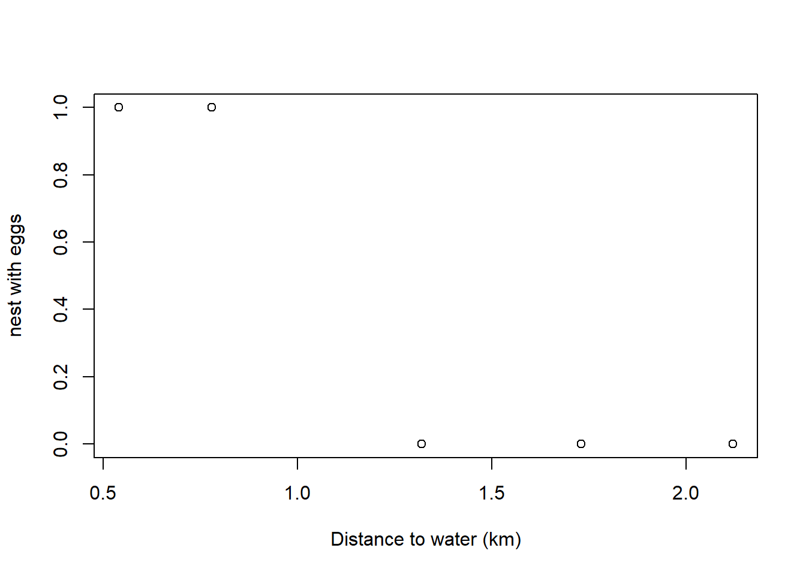
## [1] 0.78 1.73 0.54 1.32 2.12## [1] 1 0 1 0 0We get some estimates, despite the fact that it is yet unclear why we should do it this way and not just use mean and sd. To see why, we continue our story, and the plot thickens…
15.4 The case of a linear model
We started by talking about lm, so, what is happening behind lm.
Let’s us imagine that for each nest, Andreia measured not only the distance to the water, but also the size of the nest. The observed size of the nests, let us say the diameter, in cm, were
Andreia is interested in describing, modeling, explaining how nest size changes as a function of distance to the water.
We can visualize the relationship between the distance to the water and the nest diameter
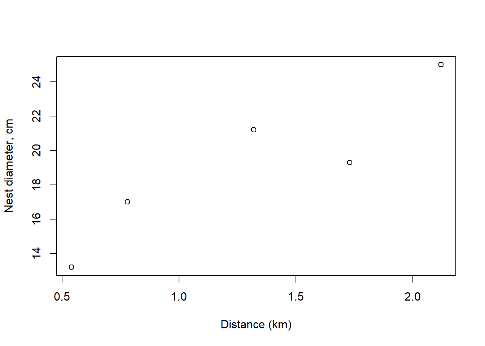
So now Andreia needs a likelihood. Since the above relation seems linear, she remembers that the linear model is given by
\[y_i=a+b x_i+e_i\]
where the \(e_i\) are a Gaussian with mean 0 and constant variance \(\sigma^2\). And then she has another epiphany and realizes that she can construct data for which a likelihood can be derived. Because if she rearranges the above expression, she obtains
\[e_i=y_i-(a+b x_i)=y_i-\hat y_i\] where, remember, by the assumptions of the linear model, the \(e_i\) are Gaussian with mean 0 and constant variance \(\sigma^2\). And so we can build a likelihood that exploits that Gaussian density for the observed errors, as
liklm=function(pars,data){
#data must be a data.frame with columns y and x
a=pars[1]
b=pars[2]
sigma=pars[3]
ps=dnorm(data$y-(a+b*data$x),mean=0,sd=sigma)
#minus loglik
loglik=-sum(log(ps))
return(loglik)
}Now we can use it over our sample
## $par
## [1] 11.120181 6.178854 1.631731
##
## $value
## [1] 9.542754
##
## $counts
## function gradient
## 192 NA
##
## $convergence
## [1] 0
##
## $message
## NULLand so we get as estimates of \(a\), \(b\) and \(\sigma\) of 11.1201813, 6.1788541 and 1.6317308, respectively. So finally, Andreia uses her estimated values for \(a\) and \(b\) and overlays the resulting estimated line over the above plot of the data
plot(dists,size,xlab="Distance (km)",ylab="Nest diameter, cm")
abline(lmMLE$par[1],lmMLE$par[2],lty=2,lwd=2,col="blue")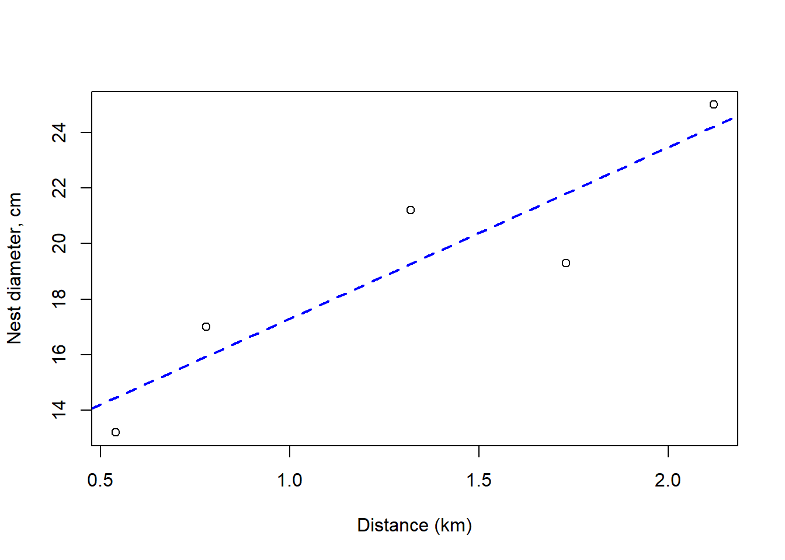
Now, we know that lm does this kind of stuff very efficiently, so how do these compare across? We can look at the outcome of the lm call
##
## Call:
## lm(formula = size ~ dists)
##
## Residuals:
## 1 2 3 4 5
## 1.0616 -2.5101 -1.2550 1.9240 0.7794
##
## Coefficients:
## Estimate Std. Error t value Pr(>|t|)
## (Intercept) 11.117 2.296 4.843 0.0168 *
## dists 6.181 1.613 3.832 0.0313 *
## ---
## Signif. codes: 0 '***' 0.001 '**' 0.01 '*' 0.05 '.' 0.1 ' ' 1
##
## Residual standard error: 2.106 on 3 degrees of freedom
## Multiple R-squared: 0.8304, Adjusted R-squared: 0.7738
## F-statistic: 14.68 on 1 and 3 DF, p-value: 0.03132and when we add these to the above plot, we see we were bang on: the two lines are indistinguishable by eye.
plot(dists,size,xlab="Distance (km)",ylab="Nest diameter, cm")
abline(lmMLE$par[1],lmMLE$par[2],lty=2,lwd=2,col="blue")
abline(lm0,lty=3,lwd=2,col="green")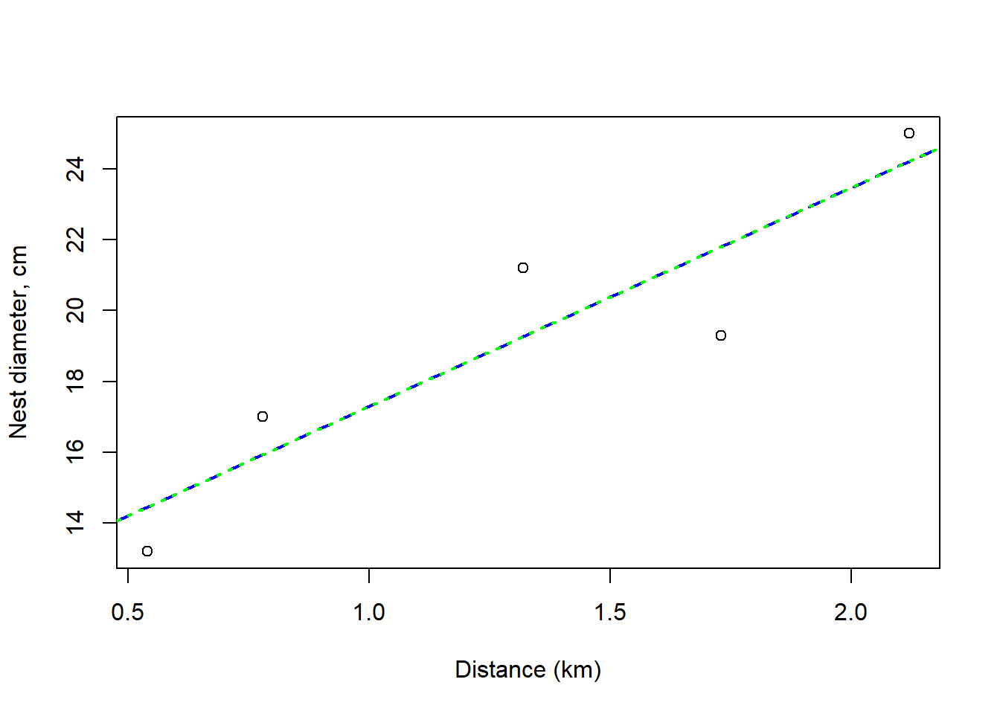
So, but still, why would we do it this way, since lm does it with less hassle, faster, and probably better? For a number of reasons, including:
- because it allows us a framework that is generalizable to any model for which we can define the likelihood, so it works for more than standard regression models
- because it allows us to really understand what is happening in the background, as an example, we can relate the profile of the likelihood to the variance around the parameter estimates
So to complete this chapter, lets see an example for which a dedicated function like lm is not available off-the-shelf, and we would really need to write down our own likelihood to get meaningful ecological inferences.
15.5 The really interesting case
Imagine now that we were interested in relating the probability for a nest being successful with the distance of the nest to a body of water. A possible ecological explanation for there being a negative relationship between the distance and the success probability might be that near water bodies there are usual more insects, and hence more food which means improved body condition and hence incentives for attempting reproduction. We could therefore hypothesize that
\[\theta_i=f(d_i)\]
and that this function is such that for a given nest \(i\), the larger the distance \(d_i\) the smaller the probability of success \(\theta_i\).
A possible way to conceptualize that relationship might be by choosing \(f\) in a way that forces \(\theta\) to be in the plausible range for a probability. One such way is to assume a logistic relationship between the probability and the distance
\[\theta_i=\frac{1}{1+exp(-(\alpha+\beta d_i))}\]
We can easily code up this expression in R as
We can visualize what that function might look like for some arbitrary values for \(\alpha\) and \(\beta\). After some poking around, I choose the following values
These values imply that the probability of a nest near a body of water having eggs is relatively high, in fact, if just by the water (\(d=0\)) then around 1, and around 1km it will be 0.98 but by about 5km from the water the probability is down at effectively 0. If we overlay the data on top, there is a really good agreement between the proposed function and the observed success data, not so much with the faillure data
alldists<-seq(0,5,by=0.05)
plot(alldists,thetafd(alpha,beta,alldists),ylab="P(nest with eggs)",xlab="Distance from water (km)",type="l")
#add the data on top
points(dists,nests)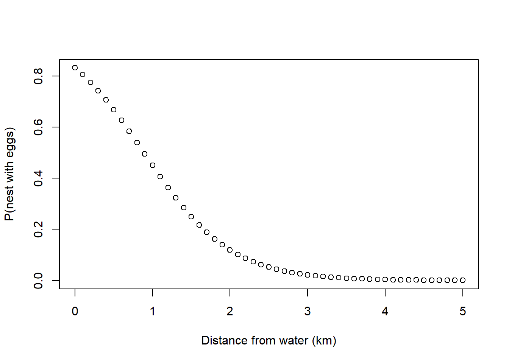
Having done this, then it is relatively simple to modify the likelihood that we used for \(\theta\) before, by replacing the \(\theta\) by a function of the relevant covariate \(d\)
loglikthetad=function(pars,data){
nests<-data[,1]
dists<-data[,2]
alpha<-pars[1]
beta<-pars[2]
theta<-thetafd(alpha,beta,dists)
# get number of successes
n1<-sum(data==1)
# get number of faillures
n0<-sum(data==0)
# get log likelihood note log(a^b) = b log (a)
#minusloglik=-sum(n1*log(theta)+n0*log(1-theta))
minusloglik=-sum(log(ifelse(nests==1,theta,1-theta)))
return(minusloglik)
}and so we could maximize this likelihood based on the data, both the successes and the distances to the water, as observed above
data4thetadMLE<-data.frame(nests=nests,dists=dists)
thetadMLE<-optim(par=c(1,1),fn=loglikthetad,data=data4thetadMLE)
thetadMLE## $par
## [1] 244.7325 -257.4930
##
## $value
## [1] 0
##
## $counts
## function gradient
## 53 NA
##
## $convergence
## [1] 0
##
## $message
## NULLNow, this provides some additional ecological insight. Unlike the naive estimator for the probability of a nest having eggs we obtained above, of 0.4, we can now relate that probability to the distance from the water. And we see is that the probability of a random nest having eggs might not be constant, in fact, far from it. We just happened to consider a small sample for which two out of five nests were near the water. While the naive estimate might change considerably depending on the relative amount of nests near the water versus nests away from the water in a sample, if the main determinant of nest success was the distance from the water, our final model would allow a better estimate of the true probability of success of a nest, given its distance from the water. We can visualize the estimated function in the plot below:
alldists<-seq(0,5,by=0.01)
plot(alldists,thetafd(thetadMLE$par[1],thetadMLE$par[2],alldists),ylab="Estimated P(nest with eggs)",xlab="Distance from water (km)",type="l")
points(dists,nests)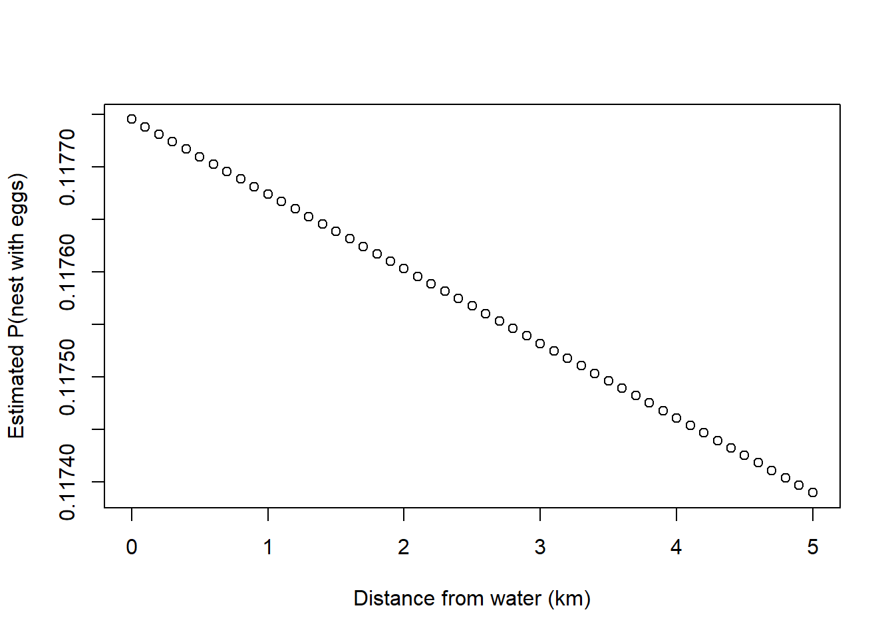
Note that with only 5 nests, there is not much information to estimate the function. Just to illustrate, and pretending that we had much more data

data4thetadMLE2<-data.frame(nests=nests2,dists=dists2)
thetadMLE2<-optim(par=c(1,1),fn=loglikthetad,data=data4thetadMLE2)
thetadMLE2## $par
## [1] 9.667410 -6.801157
##
## $value
## [1] 28.0841
##
## $counts
## function gradient
## 71 NA
##
## $convergence
## [1] 0
##
## $message
## NULLin which case, we would get a more sensible transition between successes and failures as a function of distance to the water, as shown below (note data were jittered, for easier visualization). We are now able to make potentially interesting ecological inferences based on the data. This all being allowed by exploiting the likelihood.
alldists<-seq(0,5,by=0.05)
plot(alldists,thetafd(thetadMLE2$par[1],thetadMLE2$par[2],alldists),ylab="Estimated P(nest with eggs)",xlab="Distance from water (km)",type="l")
points(jitter(dists2,amount=0.05),jitter(nests2,amount=0.01))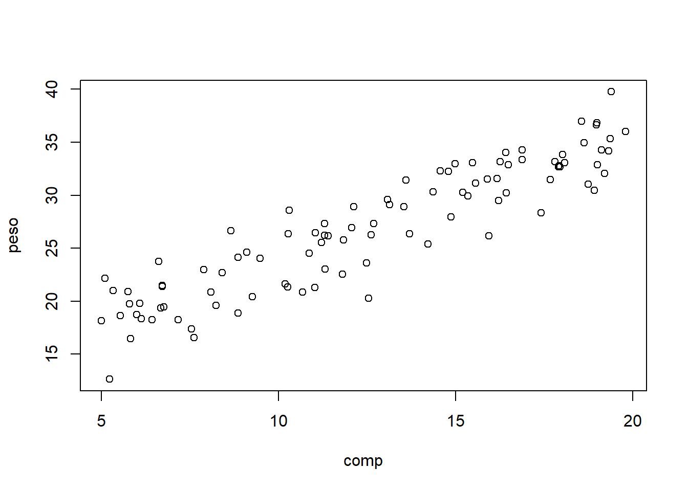
15.6 Likelihood, above and beyond
The examples presented in this chapter should illustrate a couple of fundamental points regarding the method of maximum likelihood.
The likelihood is a concept that allows one to obtain parameter estimates for model parameters that might allow ecological insights, provided that the model parameters are interpretable.
The likelihood allows to establish a full framework that can be extended and generalizable to become as complex as a researcher might want. However, if you complicate the model enough, not surprisingly, the likelihood might become hard to write down and even harder to maximize, and then one needs to find alternatives.
One such alternative might actually be to change the inferential framework. The likelihood is actually the basis of the Bayesian inferential paradigm, but there you combine the information from the likelihood with a prior to provide a posterior distribution from which inferences can be made. The prior will represent previous knowledge about unknown quantities, like the parameters in a model. That opens a world of possibilities, like the possibility of including information from previous studies to make more reliable inferences based on the data collected in the current study. This is a story for another book, however.
Most of the (parametric) statistical methods that you have used are probably based on a likelihood. That is the case for most parametric statistical tests like t-tests and ANOVA’s (despite the fact that ANOVA’s are typically implemented not exploiting the likelihood but using decompositions of the sources of variation into sums of squares associated to different components of the underlying linear models). That was a story we touch upon briefly, from a different perspective (see chapter ).